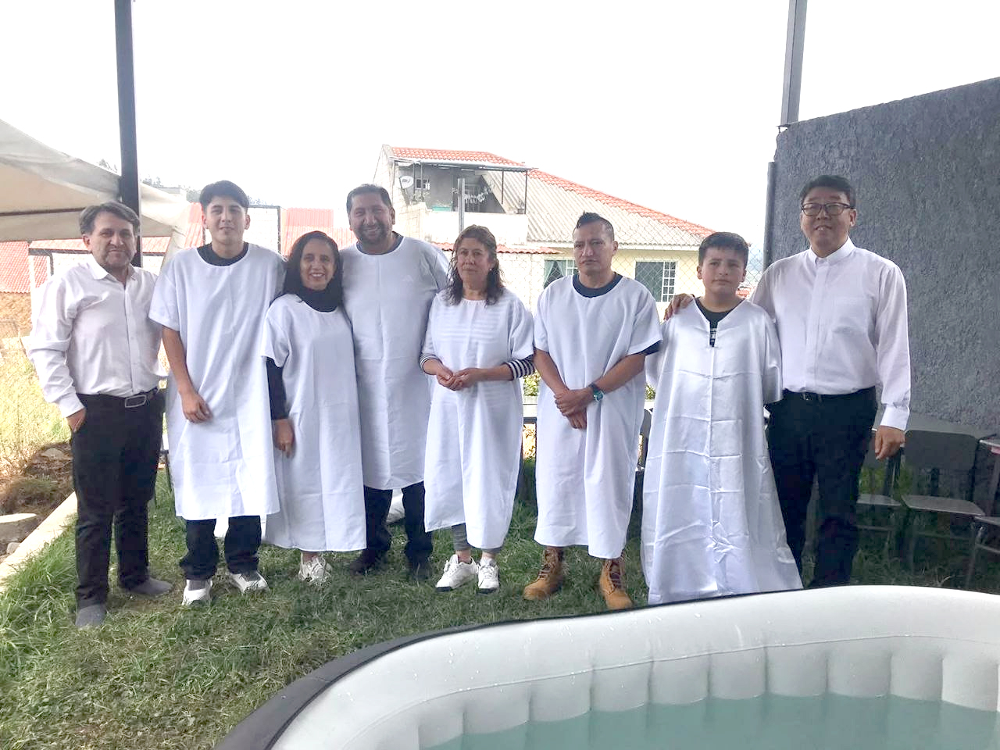
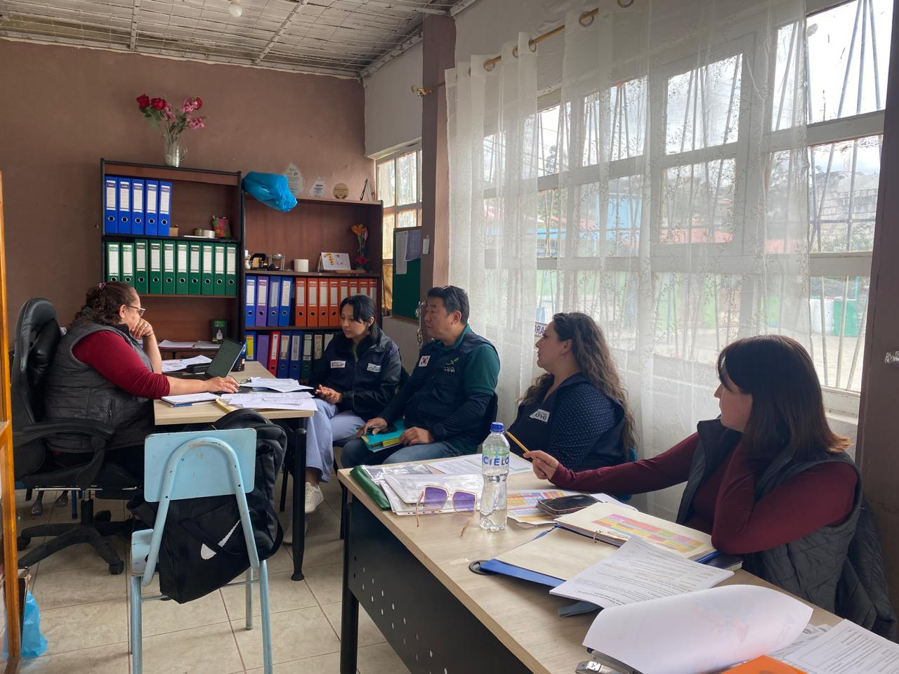
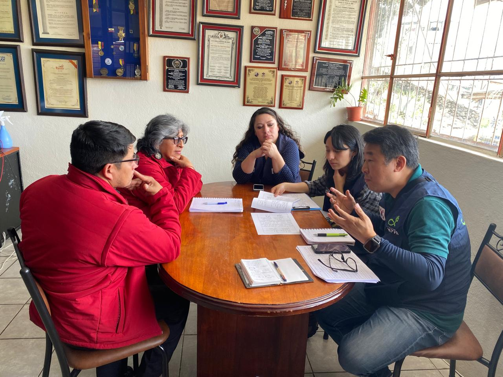

사랑하는 후원자분들과 기도의 동역자 여러분, 적도의 햇살과 맑은 바람이 있는 에콰도르에서 감사와 축복의 인사를 올려드립니다.
먼 거리 속에서도 늘 마음과 기도로 저희 가정과 현지 사역을 지탱해 주시는 동역자 여러분이 계시기에, 저희는 따뜻한 위로와 힘을 얻고 기쁨으로 현장 사역을 이어가고 있습니다. 동역자 여러분의 일터와 가정 가운데 주님의 깊은 평안과 풍성한 은혜가 늘 함께하기를 간절히 소원합니다.
뜨거웠던 여름 계절이 지나가고, 아침저녁으로 느껴지는 선선한 공기와 함께 가을의 결실들이 맺어져 가고 있습니다. 만물을 각기 때에 따라 아름답게 돌보시는 하나님의 신실하신 은혜와 사랑을 날마다 고백하게 됩니다.
최근 저희 가정은 한국에서의 급작스러운 상황과 에콰도르 현지 사역을 오가며 참으로 많은 눈물과 기도 속에 시간을 보냈습니다. 때로는 한 치 앞도 예측하기 힘든 막막함이 찾아오기도 했지만, 그 과정 속에서 하나님께서는 '하나님의 때를 기다리는 정직한 순종'이 무엇인지 가르쳐 주셨습니다.
또한 멀리 계심에도 현지의 안타까운 소식에 함께 가슴 졸이며 눈물로 중보해 주신 '동역자(열매지기) 여러분의 온기 넘치는 기도의 힘'이 선교 현장에서 얼마나 커다란 위로이자 버팀목이 되는지 가슴 깊이 깨닫게 되었습니다.
이번 21호 소식지에 정성스레 담아낸 에콰도르 현지의 은혜로운 소식들이, 동역자 여러분의 일상에도 살아계신 주님의 화평과 따뜻한 소망으로 닿기를 간절히 기도합니다.
고린도후서 1:11
"너희도 우리를 위하여 간구함으로 도우라 이는 우리가 많은 사람의 기도로 얻은 은사로 말미암아 많은 사람이 우리를 위하여 감사하게 하려 함이라"
Ecuador Mission Stories
에콰도르 사역 이야기
현지 현장에서 일어난 주님의 선하신 은혜와 회복의 소식입니다.
#1. 회복의 은혜와 기다림 속에 진행된 세례식한국 & 에콰도르 현장 소식
🏥 장인어른 회복과 치유
🌊 이까바뇨스 교회 6명 세례 예식
지난 여름, 한국에 계신 장인어른의 갑작스러운 건강 악화 소식을 접하고 저희 부부는 황급히 귀국길에 올랐습니다. 연세가 많으신 데다 병세가 급작스럽게 악화되어 마음의 부담과 걱정이 컸지만, 소식을 듣고 정성껏 마음 모아 기도해 주신 수많은 동역자 여러분의 중보 기도 덕분에 위기를 무사히 넘길 수 있었습니다. 마침내 장인어른께서 안정을 되찾으시고 본 치료와 항암 치료를 시작하시게 되었습니다. 절망 대신 주님의 신실하신 치료하심을 경험하게 하신 은혜에 머리 숙여 깊은 감사를 드립니다.
장인어른의 경과가 안정을 찾은 뒤 에콰도르 선교 현장으로 무사히 복귀했을 때, 저희를 기다리고 있던 또 하나의 커다란 감동과 기쁨이 있었습니다. 바로 저희 사역지인 이까바뇨스 교회의 호르헤 목사님과 현지 성도님들이 저희 부부가 돌아와 함께 기뻐하고 축복해 줄 때까지 세례식을 기쁨으로 아껴두고 기다려 준 것이었습니다.
현지 복귀 후 성도들과 함께 세례 교육 과정을 마무리하고 예식을 정성스럽게 준비하여, 마침내 6명의 현지 성도들이 예수 그리스도를 자신의 삶의 유일한 구주로 고백하며 세례(이곳은 침례를 합니다.)를 받는 거룩한 예식을 마쳤습니다. 물속에서 일어설 때마다 성도들과 다 함께 기뻐하고 감사의 고백을 나누던 시간은, 하나님께서 이 땅에 심어두신 복음의 씨앗이 결코 헛되지 않음을 눈으로 확인하는 복되고 울림 있는 은혜였습니다.
한국에 머무는 동안 정말 많은 분들이 따뜻한 위로와 사랑을 보내주셨습니다. 일일이 찾아뵙고 인사를 드려야 마땅하나, 갑작스러운 일정으로 그러지 못한 채 돌아오게 되어 마음이 무겁고 송구스럽습니다. 다음번에는 꼭 미리 연락드리고 함께 차 한잔 나누며 믿음의 교제를 나눌 수 있기를 소망합니다.
세례 예식 현장 갤러리

6명의 세례 성도들과 함께한 축복의 날
호르헤 목사님과 함께 세례문답
#2. 새 학기 지역 학교 및 보건 교육 사역 준비에콰도르 학교 & 보건 사역
🎒 9월 에콰도르 새 학기 개학
❤️ 감정·성교육 & 생리 위생용품 지원
에콰도르 현지에서는 9월을 맞이하여 아이들의 새로운 학년 과정이 시작되었습니다. 저희는 이번 학기에도 지역 아이들의 육체적 건강뿐 아니라 정서적·영적 성장을 돕기 위해 주변 학교 기관들과 밀접하게 협력하여 다양한 다각도 교육 사역을 준비하고 있습니다.
대표적으로 어거스틴 꾸에스타 학교(Escuela Agustín Cuesta), 마누엘 꼬르도바 학교(Colegio Manuel Córdova) 등과 협의를 이어가고 있습니다. 성장기 아이들을 위한 올바른 감정 조절 및 성교육 프로그램, 여학생들의 건강한 삶을 위한 생리 보건 교육 및 위생용품 지원, 올바른 이빨 닦기 및 구강 건강 검진, 그리고 기후위기 인식개선을 위한 환경 교육 등을 추진하고 있습니다.
현지 교육 당국 및 학교와의 행정 절차 협의가 간혹 더디게 진행될 때도 있지만, 차세대 아이들에게 하나님 아버지의 인격적인 사랑과 스스로의 존귀함을 가르쳐 주는 소중한 사역이기에 인내와 기도로 차근차근 학교의 문을 두드리고 있습니다.
학교 기관 협의 현장

어거스틴 꾸에스타 학교 사역 협의

마누엘 꼬르도바 학교 관계자 미팅
#3. 화평가족 이야기 & 중남미 선교사 대회 참석자녀 성장 & 재충전 소식
저희 두 자녀 하윤이(중학교 2학년)와 하성이(초등학교 6학년)도 새 학년을 맞아 새로운 학업과 친구 관계에 적응하고 있습니다. 낯선 타국 문화 환경 속에서도 늘 밝고 씩씩하게 자라주는 아이들이 참으로 대견하고 고맙습니다. 아이들이 학업 가운데 하나님을 아는 지혜를 얻고, 믿음의 참된 동역자들과 좋은 친구들을 만나 영 육간에 건강하게 자라도록 기도를 부탁드립니다.
또한 저희 부부는 '중남미 감리교 선교사 대회'에 참석하게 되었습니다. 선교지에 복귀한지 얼마안되어 여러모로 쉽지않은 결정이었지만, 에콰도르 파송 이후 처음으로 참석하는 선교사 대회라 저희에게도 참 뜻깊은 시간이 될 것 같습니다. 감리교 선교사로서 우리의 정체성과 부르심을 다시 한번 돌아보고, 중남미 각지에서 오랜시간 헌신해 오신 감리교 선배 선교사님들과 함께 사역의 기쁨과 아픔을 나누고, 하나님께서 부르신 첫 마음을 다시금 정돈하는 귀한 재충전의 시간이 될 것으로 기대하고 있습니다. 대회 이동 및 왕래 과정 속에서 안전과 건강을 지켜주시도록 함께 기도해 주시면 감사하겠습니다.
"여호와 그가 네 앞에서 가시며 너와 함께 하사 너를 떠나지 아니하시며 버리지 아니하시리니 너는 두려워하지 말라 놀라지 말라" (신명기 31:8)
에콰도르에서 보내는 마음의 편지
기다림 속에 신실하게 맺히는 열매들을 바라보며
적도의 높은 하늘 아래에서 선교 현장의 하루하루를 살아가며, '기다림' 또한 하나님을 향한 순종의 매우 중요한 한 부분임을 배우고 있습니다.
한국에서 장인어른의 치료와 회복을 간절히 바라고 기다리던 순간들, 에콰도르 현지 성도들이 선교사 부부의 복귀를 온 마음으로 기다려 치러낸 세례식, 그리고 지역 학교 사역의 문이 열리기까지 기도로 조용히 문을 두드리는 모든 과정 속에서 하나님께서 친히 앞서 일하고 계심을 확신합니다.
때로는 진행 속도가 눈에 띄게 빠르지 않더라도, 주님께서 보여주신 바른 방향을 잃지 않고 겸손히 걸어가겠습니다. 한국과 전 세계 곳곳에서 보태주신 귀한 기도의 씨앗이, 이곳 에콰도르 땅에서 하나님이 기뻐하시는 화평으로 심은 아름다운 열매로 결실 맺히기를 간절히 소망합니다.
2026년 9월, 늘 변함없는 동행에 깊이 감사드리며
적도의 나라 에콰도르에서 조완희·김영선(하윤, 하성) 선교사 드립니다.
Prayer Requests
2026년 9월 중보기도 제목
버튼을 눌러 기도로 함께 마음을 모아주세요.
1
장인어른의 건강 치료와 완전한 회복을 위하여치유 중보
진행 중인 항암 치료 과정 속에서 체력과 면역력이 강건하게 유지되게 하시고, 주님의 온전한 치유의 손길과 평안이 마음속에 늘 충만하도록 기도해 주세요.
치유와 평안
2
이까바뇨스 세례 성도들의 영적 성장과 뿌리를 위하여양육 중보
세례를 받은 6명의 현지 성도들이 세상의 흔들림이나 유혹 속에서도 믿음의 뿌리를 주님 안에 깊이 내리고 신실한 제자로 성장하도록 기도해 주세요.
믿음 양육
3
새 학기 지역 학교 및 보건 사역의 문이 열리도록사역 중보
어거스틴 꾸에스타, 마누엘 꼬르도바 학교 및 행정 담당자들과의 미팅이 순조롭게 협의되어 아이들을 향한 차세대 교육 사역의 문이 활짝 열리게 하소서.
현지 협력
4
자녀들의 학업 적응과 선교사 대회를 위하여가정 중보
하윤, 하성이가 새 학년 학교생활에 잘 적응하고, 처음 참석하는 중남미 선교사 대회를 통해 안전과 영적 리프레시를 만끽하게 하소서.